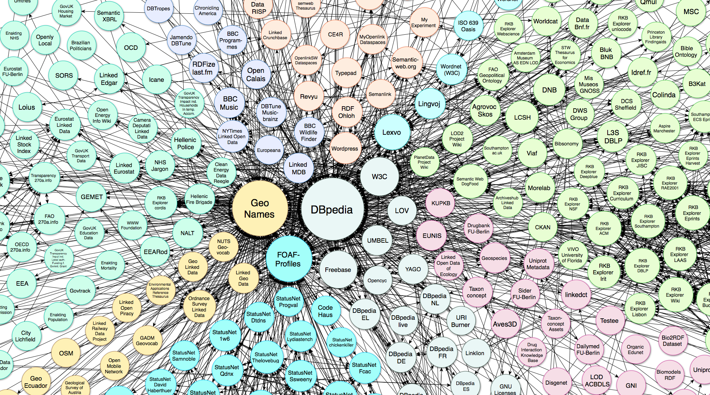
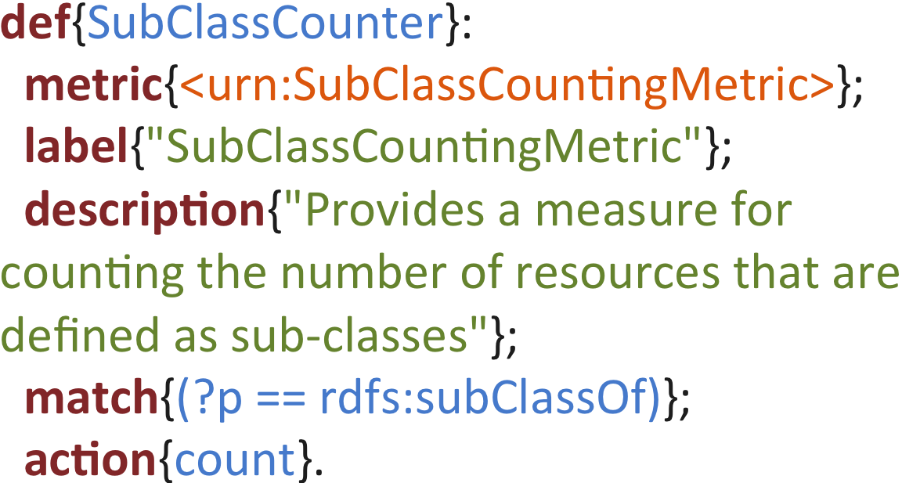
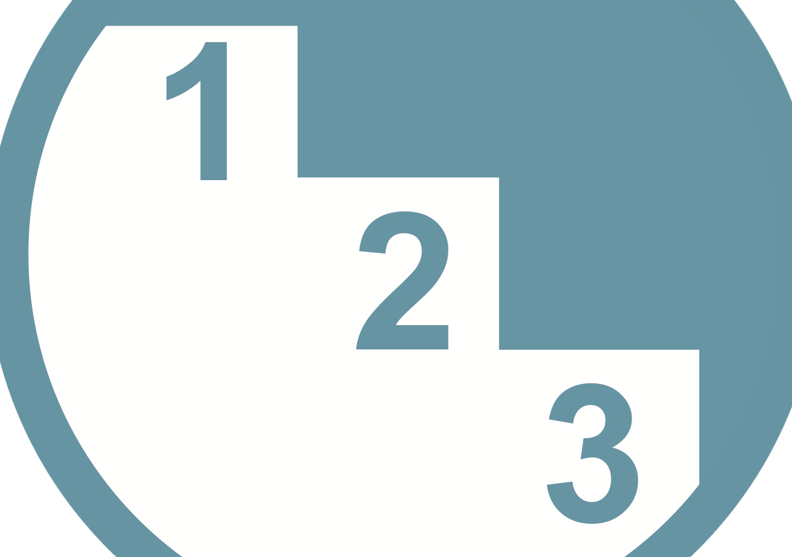

Luzzu
One of the most common sights around the coast of the Maltese Islands is the traditional boat called "Il-Luzzu" (pronounced loot-su). Luzzu is also a Quality Assessment Framework for Linked Open Datasets. Download the latest version here.
Features

Ontology Driven Backend
Luzzu is based on a semantic schema backend, making its data interoperable with other semantic frameworks.

Big Data Ready
Having hundred triples or billion triples makes no difference. The Luzzu stream processor scales linearly to the amount of triples available in a dataset.

Intuitive Metric Description
Define domain specific metrics using declarative patterns instead of implementing complex Java classes or XML.

Quality-Driven Ranking
Luzzu offers the possibility of ranking assessed datasets using the quality metadata attached to these LOD datasets.